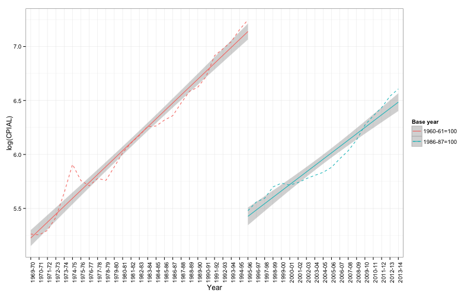

Various issues in respect of price statistics in India have been discussed in the Chapter 11 of the Report of the Rangarajan Commission. For a discussion of historical evolution of price statistics, see Sivasubramonian (1961)\cite{sivasubramonian1961}, Pandit (2000)\cite{pandit2000}, Pandit (2001)\cite{panditprice2001}.
Over the last four decades, three committees were constituted by the Ministry of Labour to look at various methodological issues in respect of consumer price indices. These were: the Nilakantha Rath Committee (1978)\cite{cpicommittee1978}, the K. C. Seal Committee (1981)\cite{cpicommittee1981} and the G. K. Chaddha Committee (2009)\cite{cpicommittee2009}. Interestingly, terms of reference for all these committees covered only the CPIIW, and none of them examined methodological issues pertaining to CPIs for Agricultural and Rural Labour.
Data for the CPIAL and the CPIRL are collected by the NSSO for the Labour Bureau. Labour Bureau computes the price indices based on the data provided by the NSSO. These are published in the Indian Labour Journal and in various other publications.
The Labour Bureau started releasing data for the CPIAL series, with base year 1950-51, from 1958. The series with base year 1960-61 was started in 1964. From November 1995, the Labour Bureau started releasing data for a new series using 1986-87 as the base year.
Following two methodological issues are of note in respect of the present series.
First, the basket of commodities, and the weights assigned to each commodity, for which prices are collected in the present series are outdated. Deaton (2008) \cite{deatonprice2008} pointed out that the weights used in the CPIAL and CPIIW do not reflect changes in consumption baskets as these weights are not updated frequently enough. Using an analysis of 1999-2000 and 2004-05 NSSO data, Deaton pointed out that the CPIAL understated inflation because of excessive weight being given to cereal consumption (and to food consumption as a whole) in CPIAL in a period in which food prices fell relative to non-food prices. In the same way, although to a smaller degree, CPIIW also understated inflation during this period.
Secondly, the sample size of the survey is just about 600 villages, and price quotations received for any commodity are far fewer. (see http://mospi.nic.in/Mospi_New/upload/RPC_July_Sep2012.pdf and http://mospi.nic.in/Mospi_New/upload/RPC_Oct_Dec2012.pdf)
Yoshifumi Usami has compiled the State-wise monthly CPIAL data for 1969-70 to 1995-96 (base-year 1960) and for 1995-96 to 2013-14 (base-year 1986-87). He has kindly made these data available for public use. The data series compiled by Yoshifumi Usami can be obtained from here:

Figure 1: Log of CPIAL, 1960 and 1986-87 series, 1969-70 to 2013-14
Data on Farm Harvest Prices are released by the Directorate of Economics and Statistics, Ministry of Agriculture. For years after 1998-99, these can be obtained from here.